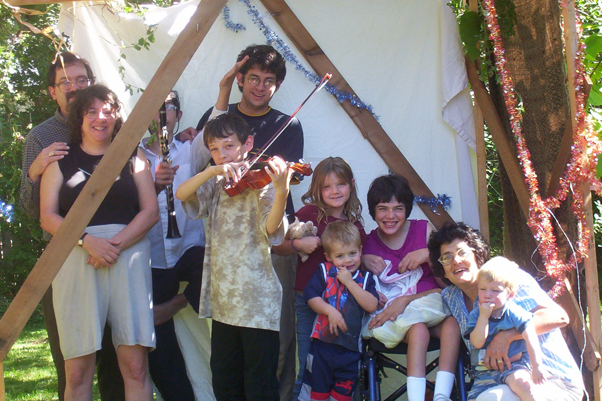
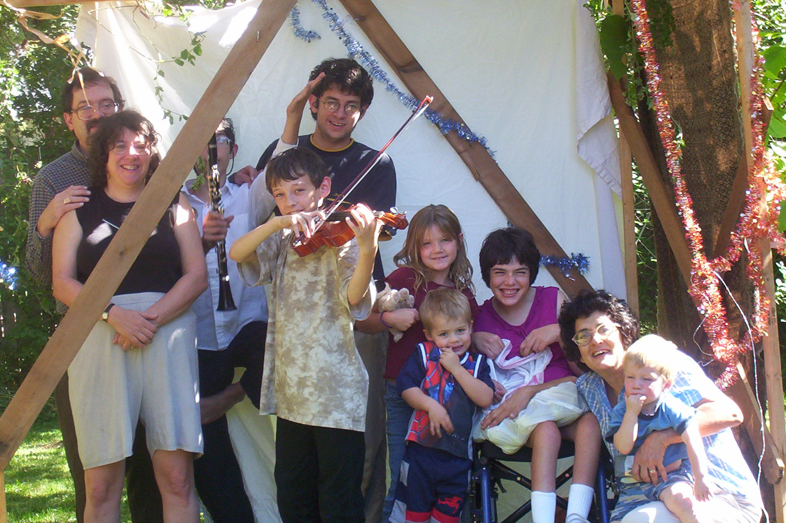
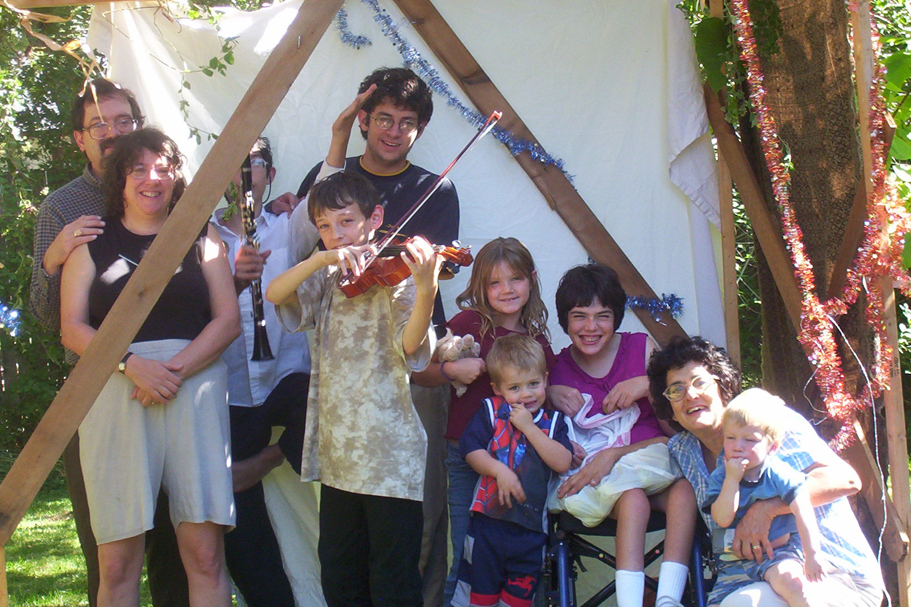

A new political piece by Jesse, in my opinion quite brilliant (a bitter comment on a well-known song):
Experience suggests that you should not attempt to run this by clicking the link: download the target of the link, then run it, and it will work. It is a rather large .wmv file. UPDATE: it appears that the media files on this page will lauch under Internet Explorer, but not under Firefox (at least not with my settings)
You can see Jesse's political ads (but you have to download them: for reasons I can't determine, they won't play when the link is clicked, again, under IE they do play when clicked):
You can look at pictures of the Holmes family and associates in our newly constructed Sukkah, on Sukkot (the Feast of Tabernacles), 2004.
These pictures are huge; my personal data is still found below them!

1985, Master's degree in Mathematics, SUNY Binghamton (now Binghamton Unversity), Binghamton, New York, USA
1990, Ph. D. in Mathematics, SUNY Binghamton (now Binghamton University), Binghamton, New York, USA
Advisor: Louis F. McAuley
1989-90, Postdoctoral, with Anil Nerode at Cornell University, Ithaca, New York, USA
1990-91 Postdoctoral, with Maurice Boffa at the University of Mons-Hainaut, Mons, Belgium
A demented creation of mine, now reimplemented for Windows 98 (a subdirectory contains a very partial implementation for Windows XP which will NOT work without additional effort), is a dungeon adventure game in the style of Zork written entirely in DOS batch files. A version compressed with WinZip is found here. This is already a new release (version 0.2, Sept. 18, 2003): the major change is that there is now a README file with lots of info about installing and playing the game in the top directory, so I don't need to include extensive remarks here. There are some changes in functionality as well, but not major ones (the output of player commands is prettier). I will comment that the game expects to be installed as a folder with path C:\windows\desktop\ddos, and if it isn't the ddos environment variable set in commands\setup.bat needs to be reset. If you have any questions, or if you have created any new objects or monsters after trying it out (my children did this quite spontaneously), feel free to communicate with me. Added June 2020: I am really not sure whether this can be made to work. If someone does get it to work, tell me!
Here is an interpreter and debugger for Befunge written in Logo. It runs under Berkeley Logo and MSWLogo (the latter is better). It isn't documented yet (you will have to read the files to figure out what they do -- the file is a text file with Logo source). It allows one to edit and run Befunge programs in the same environment. At the moment what is implemented is the Befunge 93 command set on tori of arbitrary size. The editing is character-by-character at the moment, but it does allow use of the instruction vector to type in any cardinal direction; I plan to enhance the editor. I also intend to expand the Befunge 93 instruction set somewhat. This version crashes Berkeley Logo eventually, for reasons apparently having nothing to do with its correctness as an interpreter; I modified variable names so that it would work in MSWLogo and it works fine there. A new version has been uploaded (Sept. 26) which fixes a number of bugs but still isn't documented. You can't win: funges are harder to read in the MSWLogo format. Loading from files is now supported (uploaded Sept. 25), but not saving to files. There is still a complete lack of documentation. Eventually, I will install a command with some name like "fungehelp" which will give information.
Here's an interesting educational game.
An intermittent hobby of mine is the artificial spoken language Loglan, whose grammar is unambiguously parsable by machine (using YACC) and partially based on first-order logic. Lojban is a closely related language with better Web resources (Ido to Loglan's Esperanto).
I wrote in the early 1990's "I think that the most interesting historical development going on now is the progress of the European Union": I am saddened by developments since.
I just found out during my last update (well, that was a long time ago) that Belgium, a country I am very fond of, is the homeland of the Smurfs of whom I am also very fond. I'm afraid I couldn't resist...my apologies to all serious people!